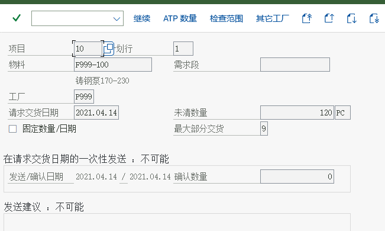

実習：5 つのハンズオンタスク
タスクカード · 完成基準 · 対応画面 · よくあるエラー
5 つのタスクを順に進めれば、O2C をひと通り体験したことになります。各タスクには「完成基準」（自分で確認できる）が用意されており、および対応する教材の実際の画面です。記入には受講者用記入表を使います。
タスク 1
組織構造を理解する
組織 対応するコースページ：組織構造を理解する何をするか
- システムで販売組織、流通チャネル、製品部門の一覧を確認（カスタマイジングまたはテーブルを直接照会）
- 自システムにすでに登録済みの販売エリアを探し、2〜3 の組合せを記録する
- プラント → 販売組織/流通チャネル の割当を探し、「なぜ複数なのか」を説明する
完成基準（自分で検証できて初めて完了）
- 「販売組織 × 流通チャネル × 製品部門 = 販売エリア」の図を描ける
- 本システムの販売エリアにどのようなものがあるかを言える
- プラントと販売組織がなぜ多対多なのかを説明できる
よくあるエラー / 行き詰まったらここを見る「販売エリア」を「販売部門」と言い換えています——販売エリア（Sales Area）と販売事務所（Sales Office）の区別に注意してください。


タスク 2
見積 → 受注伝票
プロセス 対応するコースページ：見積何をするか
- VA21 で見積を 1 件作成する（得意先 + 品目 + 数量 + 有効日）
- 見積の価格条件をチェック：価格はどの条件レコードから来るのか
- 「後続機能 → V-01 受注」で見積を参照して受注伝票を作成する（受注タイプ OR）
- 受注伝票に記録：確定納入日、正味価額、明細カテゴリ
完成基準（自分で検証できて初めて完了）
- 見積番号と受注番号を取得
- 受注伝票のヘッダから見積までたどれる（環境 → 伝票フロー）
- 受注伝票で価格が自動的に取得され、条件レコードと一致する
- 納入日に値があることを確認する（所要量確認が実行された証拠）
よくあるエラー / 行き詰まったらここを見る価格が空 → 条件レコードが存在するか/期限切れかを確認。確認日が空 → 所要量確認がオフになっていないか確認。

{kind=link}

タスク 3
納入と出庫過転記
プロセス 対応するコースページ：納入と出庫過転記何をするか
- VL01N で受注伝票を参照して出荷伝票を作成する（出荷ポイントと納入日に注意）
- VL02N でピッキングを完了（ピッキング数量を入力）
- 「出庫過転記」（移動タイプ 601）をクリックし、システムメッセージを記録する
- MMBE または MB52 で在庫の変化を見る。VL03N で納入ステータスを見る
完成基準（自分で検証できて初めて完了）
- 納入番号を取得し、納入ステータス＝出荷完了
- 在庫数量が減少（前後の数量を記録）
- 「納入伝票の作成時点では在庫は変わらず、出庫過転記後に変わる」と説明できる
よくあるエラー / 行き詰まったらここを見る在庫なしと表示 → MB1C + 移動タイプ 501 で期首在庫を入力（教材タスク 48 の方法）。出荷ポイントが見つからない → プラントの出荷ポイント割当を確認。


タスク 4
請求と財務への転記
プロセス 対応するコースページ：請求と財務への転記何をするか
- VF01 で納入を参照して請求書を作成する（伝票タイプ F2）。請求書番号と正味価額を記録する
- VF02 で請求書をリリースし、システムメッセージ（「伝票が転記に送信されました」）を記録する
- 請求書で「会計」をクリック、または VF03 → 環境で、生成された会計伝票（借方・貸方の勘定と金額）を確認します
- FBL5N で得意先の未消込明細を照会し、売掛金が計上されていることを確認する
完成基準（自分で検証できて初めて完了）
- 請求書番号を取得し、ステータス＝転記済み（リリース済み）
- 会計伝票を確認できる：借方 得意先未収 / 貸方 収益 + 売上税
- 収益勘定がどの 3 つのキーで決まるかを言える
よくあるエラー / 行き詰まったらここを見る請求できない → 納入伝票が出庫過転記済みか確認。会計伝票がない → 勘定設定/税の設定に漏れがないか確認。


タスク 5
追跡とレポート
データ分析 対応するコースページ：追跡とレポート何をするか
- VA03 でタスク 2 の受注伝票を開く → 環境 → 伝票フロー照会 で、チェーン全体をスクリーンショットに収める
- VA05 で得意先または品目別に受注一覧を照会する
- VL06O で出荷待ち/転記待ちの納入を照会する。VF04 で請求待ちの一覧を照会する
- （任意）タスク 31/32 で更新グループが有効化されている前提で、MCTA で販売分析を 1 回実行
完成基準（自分で検証できて初めて完了）
- 「受注伝票 → 納入 → 請求書」の 3 つの番号を 1 枚の紙に書き出せる
- MCTA レポートにデータがないことがある理由を説明できる
- 「伝票を追跡する」4 つの入口を言える
よくあるエラー / 行き詰まったらここを見るレポートにデータがない → 更新グループ/統計グループが未設定、または設定前に発生したデータ。伝票フローが空 → 参照関係が切れている（直接新規作成した伝票の可能性）。


実習環境の準備チェックリスト（開講前チェック）
| チェック項目 | どう調べるか | 達成できない場合の代替 |
|---|---|---|
| SAP GUI にログインして中国語インターフェースを表示できる | ログイン後に VA03 を開く | 教材のスクリーンショットで解説し、受講者は観察記録のみを行う |
| 利用可能な販売組織/販売エリアがある | カスタマイジングの企業構造、またはテーブル TVKO／TVKOV | 既存の販売エリアを使い、新規作成しない |
| 得意先マスタ（販売ビュー）がある | VD03 / XD03 | 既存の得意先をコピーするか、Z 得意先を登録 |
| 品目（販売ビュー）+ 条件レコードがある | MM03 → 販売組織データ；VK13 で PR00 を照会 | Z 品目と Z 条件レコードを作成 |
| 在庫がある（ないと納入が流れない） | MMBE | MB1C 501 期首在庫を入力 |
| 請求と勘定設定の設定が利用可能 | 試しに請求書を 1 枚作成する VF01 | 請求書の保存までで、リリースは行わない |